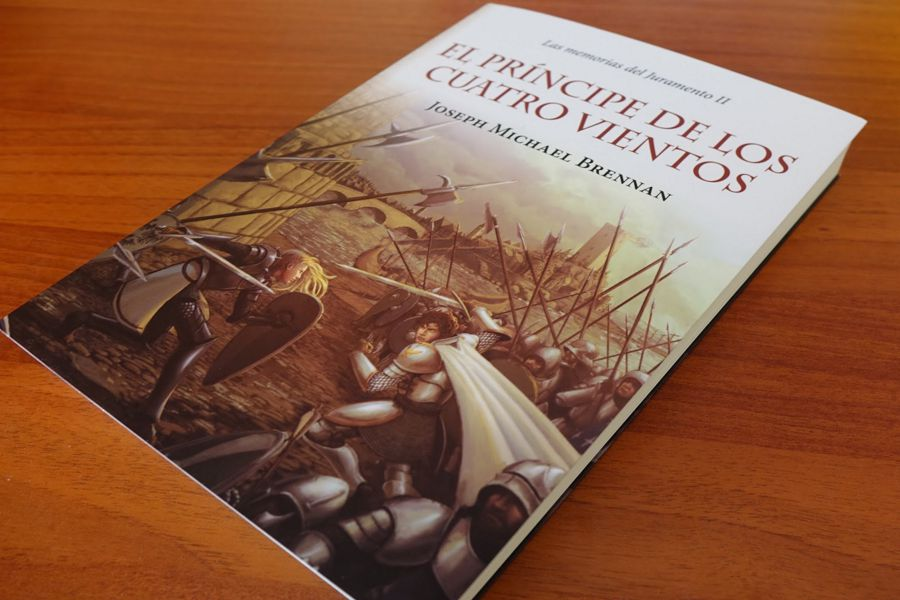

Productos

Personas Desconocidas
John Katzenbach
$320.00
Una niña de trece años que desaparece sin dejar rastro. Cuatro jóvenes blancos asesinados. Dos policías retirados que no quieren o no pueden hablar.
Un narcotraficante entre rejas con más información de la que debiera, y una pareja de policías empeñados en descubrir la verdad: una perfecta combinación para un thriller fenomenal, como solo John Katzenbach podría escribirlo.
Comprar
El Príncipe de los cuatro vientos
Josehp Michael Brennan
$320.00
Después de la batalla de Isla Blanca, Tarian se ha convertido en el Príncipe de los Cuatros Vientos, pero el trono sigue en manos del general Galkirion. Mientras avanza en su camino como aprendiz del Juramento, Tahmuz deberá ayudarlo a reunir bajo su estandarte a las demás ciudades, enfrentándose al poder del Verdugo a cada paso: las Águilas Negras, las máquinas de guerra de la Ciudad de los Sabios y las «falsas bestias» del infame Bagrat.
Comprar
El Príncipe de los cuatro vientos
Josehp Michael Brennan
$320.00
Después de la batalla de Isla Blanca, Tarian se ha convertido en el Príncipe de los Cuatros Vientos, pero el trono sigue en manos del general Galkirion. Mientras avanza en su camino como aprendiz del Juramento, Tahmuz deberá ayudarlo a reunir bajo su estandarte a las demás ciudades, enfrentándose al poder del Verdugo a cada paso: las Águilas Negras, las máquinas de guerra de la Ciudad de los Sabios y las «falsas bestias» del infame Bagrat.
Comprar